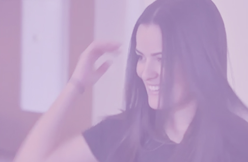
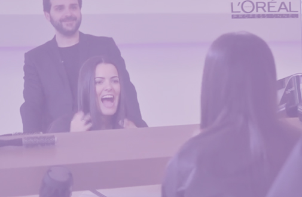

<!DOCTYPE html>

<html lang="pt-br">
<head>
	<title>Hall da Fama</title>
	<meta charset="UTF-8"/>
	<link type="text/css" rel="stylesheet" href="_css/estilo.css"/>
	<link type="text/css" rel="stylesheet" href="_css/carousel.css"/>
	<link type="text/css" rel="stylesheet" href="_css/posteriframeyoutube.css"/>
	<script type="text/javascript" src="_javascript/jquery-1.11.0.min.js"></script>
	<script type="text/javascript" src="_javascript/galeriavideocarouselhorizontal.js"></script>
	<script type="text/javascript" src="_javascript/popupregulamento.js"></script>
	<script type="text/javascript" src="_javascript/scriptpaginaspopupregulamento.js"></script>
</head>
<body style="background-color: #1a1a1a">
	<div id="fb-root"></div>
	<script src="//connect.facebook.net/pt_BR/all.js"></script>
	<script>
		window.fbAsyncInit = function() {
			  FB.init({
			    appId      : '1438309733080834', // App ID
			  });
			  FB.Canvas.setSize({ height: 2200 });
		}
	</script>
	<div id="interface">
		<div id="modal">
		</div>
		<header id="cabecalho">
		</header>
		<section id="corpo">
			<section id="principal">
				<aside id="video-titulo">
					<div id="video">
						<div class="video">
			            	
							<!--<iframe style="width:100%; height: 100%;" id="video-principal" src="//www.youtube.com/embed/5Peo-ivmupE?rel=0&autoplay=1" frameborder="0" allowfullscreen></iframe>-->
					</div>
					<div id="titulo">
						<h1>Imagine você no<br/>
							Hall da Fama de<br/>
							L'Oréal Professionnel.<br/>
							<span class="destaque">Participe e veja<br/>
							o seu penteado brilhar.</span>
						</h1>
						<div id="foto-titulo">
							
						</div>
						<br/>
						<hr size="1px"/>
						<a id="abrir-popup-regulamento" href="javascript:void(0)">
							
						</a>
					</div>
				</aside>
			</section>
			<section id="fique-por-dentro">
			  <div id='carousel_container'>
			  	<div id='carousel_inner'>
			        <ul id='carousel_ul'>
			            <li>
			            	<h1 class="titulo-video-carousel">01. Passo a passo <span class="titulo-enfase">no Paris Fashion Week</span></h1>
			            	<div class="video">
			            	
			            	<!--<iframe style="width:100%; height: 100%;" id="video-principal" src="//www.youtube.com/embed/5Peo-ivmupE?rel=0&autoplay=1" frameborder="0" allowfullscreen></iframe>-->
			            	</div>
			            </li>
			            <li>
			            	<h1 class="titulo-video-carousel">02. Conheça o lançamento <span class="titulo-enfase">Liss Unlimited</span></h1>
			            	<div class="video">
			            	
			            	<!--<iframe style="width:100%; height: 100%;" id="video-principal" src="//www.youtube.com/embed/5Peo-ivmupE?rel=0&autoplay=1" frameborder="0" allowfullscreen></iframe>-->
			            	</div>
			            </li>
			            <li>
			            	<h1 class="titulo-video-carousel">03. Aprenda a fazer uma escova com <span class="titulo-enfase">a Jô Nascimento<span></h1>
			            	<div class="video">
			            	
			            	<!--<iframe style="width:100%; height: 100%;" id="video-principal" src="//www.youtube.com/embed/5Peo-ivmupE?rel=0&autoplay=1" frameborder="0" allowfullscreen></iframe>-->
			            	</div>
			            </li>
			            <li>
			            	<h1 class="titulo-video-carousel">04. Assista o passo a passo <span class="titulo-enfase">da Verticalização Capilar.</span></h1>
			            	<div class="video">
			            	
			            	<!--<iframe style="width:100%; height: 100%;" id="video-principal" src="//www.youtube.com/embed/5Peo-ivmupE?rel=0&autoplay=1" frameborder="0" allowfullscreen></iframe>-->
			            	</div>
			            </li>
			        </ul>
			    </div>
			  <div id="modal-esquerdo"></div>
			  <div id="modal-direito"></div>  
			  <div id='left_scroll' class="commands-carousel"></div>
			  <div id='right_scroll' class="commands-carousel"></div>
			  </div>
			</section>
		</section>
		<section id="rodape">
		</section>
	</div>
	<div id="popup-regulamento" class="pagina-regulamento">
		<a id="fechar-popup-regulamento" href="javascript:void(0)">
			
		</a>
		<h1 id="titulo-regulamento">
			
		</h1>
		<div id="botaopagina" style="display:block; position:absolute; left:200px; bottom:17px">
			<a id="pagina-anterior" href="javascript:void(0)"></a>
			&nbsp;&nbsp;<span id="paginas"style="color:white; vertical-align:super"></span>&nbsp;&nbsp;
			<a id="proxima-pagina" href="javascript:void(0)"></a>
		</div>
		<div id="texto-regulamento">
		<div id="primeira-pagina" class="pagina-regulamento">
					<p>QUADRO RESUMO</p>

					<p>1 PERÍODO DE PARTICIPAÇÃO </p>

					<p>Início às 18 horas do dia 09/04/2014 e término 

					às 23:59 horas do dia 09/05/2014.</p>

					<p>2 FORMA DE PARTICIPAÇÃO</p>

					<p>Para participar o interessado deverá:</p>

					<p>i. Enviar 01 (uma) foto com o “antes” e com o “depois” da Verticalização Capilar 

					– serviço profissional de Liss Unlimited, por meio das seguintes formas: (a) 

					pelo Instagram com a hashtag #aquinosalao; ou (b) pelo Facebook, com a 

					#aquinosalao. ((b) https://www.facebook.com/lorealprofessionnel.br Facebook 

					com a hashtag #aquinosalao;</p>

					<p>ii. Para participar, o usuário precisa deixar seu perfil público para que os votos sejam contabilizados.<p>
					
		</div>

		<div id="segunda-pagina" class="pagina-regulamento">

					<p>iii. As fotos precisam ter resolução mínima de "1 Mb".</p>

					<p>iv. As fotos serão votadas pelo botão “curtir (like)” pelos seguidores dos próprios 

					participantes em seus perfis nas redes sociais. Os votos serão somados nas 

					plataformas em que a foto foi compartilhada. As dez fotos mais votadas serão 

					exibidas no Hall da Fama de L’Oréal Professionnel, com destaque especial 

					para a foto que alcançar a maior quantidade de votos. As fotos recebidas 

					serão previamente verificadas pelo moderador da aba, apenas com o intuito de 

					verificar se as mesmas atendem os padrões estabelecidos neste regulamento 

					(item 4 abaixo – restrições), e então serão postadas na galeria Hall da Fama. 

					Em caso de mais de uma foto receber a mesma quantidade de votos, será 

					usado o número de compartilhamentos como critério de desempate.</p>

		</div>

		<div id="terceira-pagina" class="pagina-regulamento">
			<p>1. Esta ação é promovida pela L'ORÉAL BRASIL COMERCIAL DE 

			COSMÉTICOS LTDA., inscrita no CNPJ/MF sob o nº 30.278.428/0001-61, com 

			sede na Rua São Bento, nº. 08, lojas A e B, 3º, 4º, 5º, 9º-pte, 10º, 11º, 14º, 15º, 

			16º, 17º, 19º - pte, 20º, 21º andares e anexos ao 21º andar, Centro, Rio de 

			Janeiro, RJ, CEP: 20.090-010, e possui caráter exclusivamente recreativo e 

			cultural, não havendo qualquer modalidade de sorte ou pagamento por parte dos 

			participantes, não sendo necessária a aquisição de qualquer produto, bem ou 

			serviço, de acordo com o artigo 3º, item II, da Lei nº 5768/71 e com o artigo 30º 

			do Decreto-Lei nº 70.951/72.</p>
		</div>

		<div id="quarta-pagina" class="pagina-regulamento">

			<p>DOS REQUISITOS PARA PARTICIPAÇÃO:</p>

			<p>2.1. Para fins de participação na presente ação, os participantes deverão ser 

			maiores de 18 (dezoito) anos de idade e residentes no território nacional.</p>

			<p>2.2. É vedada a participação de pessoas jurídicas, empregados da empresa 

			promotora, das agências de propaganda e promoção do evento e/ou quaisquer 

			outras pessoas envolvidas com a presente ação, assim como seus parentes em 

			1º e 2º graus, cônjuges ou companheiros.</p>
		</div>

		<div id="quinta-pagina" class="pagina-regulamento">
			<p>DA FORMA DE PARTICIPAÇÃO:</p>

			<p>3.1. Para participar desta ação, o interessado deverá seguir as instruções do 

			item 2 do quadro resumo durante o período de participação. 

			3.2. Os interessados poderão inscrever-se na presente ação diversas vezes, 

			durante o período de vigência desta, sem limite no número de participações/

			envio de fotos. </p>

			<p>DAS RESTRIÇÕES:</p>

			<p>4.1. Não serão aceitas fotos que possuam conteúdos que:</p>

			<p>i. possam causar danos a terceiros, seja através de difamação, injúria ou 

			calúnia, danos materiais e/ou danos morais;</p>
		</div>

		<div id="sexta-pagina" class="pagina-regulamento">

			<p>ii. sejam obscenos e/ou pornográficos;</p>

			<p>iii. contenham mensagens subliminares;</p>

			<p>iv. contenham informações que possam ser entendidos como incitação à prática 

			de crimes (ou contravenção penal);</p>

			<p>v. constituam ofensa à liberdade de crença e às religiões;</p>

			<p>vi. contenham informações racista ou discriminatória;</p>

			<p>vii. violem qualquer lei ou sejam inapropriadas;</p>

			<p>viii. tenham intenção de divulgar produto, serviço ou qualquer finalidade 

			comercial;</p>
		</div>

		<div id="setima-pagina" class="pagina-regulamento">

			<p>ix. façam propaganda eleitoral ou divulguem opinião favorável ou contra partido 

			político ou candidato;</p>

			<p>x. tenham sido produzidas por terceiros;</p>

			<p>xi. sejam confidenciais ou sujeitos a contratos de confidencialidade;</p>

			<p>xii. violem, de qualquer maneira, direitos de Propriedade Intelectual, em especial 

			direitos autorais e marcários.</p>

			<p>4.2. As fotos enviadas pelos participantes que se enquadrem no disposto na 

			cláusula anterior serão sumariamente excluídas da presente ação, sem prévio 

			aviso, a critério da promotora.</p>
		</div>

		<div id="oitava-pagina" class="pagina-regulamento">
			<p>4.3. Serão igualmente desclassificadas as fotos que fizerem menção ao nome 

			da promotora ou a qualquer produto ou marca a ela vinculado, bem como 

			aquelas que contiverem conteúdo a ela elogioso ou aos produtos a ela 

			vinculados.</p>

			<p>4.4. As fotos que fujam à temática proposta e aos critérios supramencionados 

			serão desclassificadas sem prévio aviso. </p>

			<p>4.5. No caso de fotos idênticas enviadas por participantes diferentes, será 

			considerada como válida aquela com data de envio mais próxima do início da 

			ação.</p>

			<p>4.6. Estará excluído da ação o participante que, de qualquer forma, fraudar ou 

			tentar infringir as regras aqui descritas.</p>
		</div>

		<div id="nona-pagina" class="pagina-regulamento">
			<p>DO DIREITO AUTORAL:</p>

			<p>5.1. Os participantes deste concurso declaram, desde já, serem os autores das 

			fotos enviadas, não tendo cometido plágio ou qualquer outra forma de 

			apropriação autoral vedada pela lei.</p>

			<p>5.2. Os participantes, ao enviarem suas fotos, automaticamente cederão à 

			promotora, em caráter definitivo, sem quaisquer ônus ou custo, todos os direitos 

			de exploração dos direitos autorais sobre as fotos enviadas, para qualquer tipo 

			de utilização, inclusive para fins comerciais, em qualquer meio e/ou mídia, 

			publicação, reprodução por qualquer meio ou técnica, especialmente quando da 

			divulgação do resultado da presente ação.</p>

			<p>5.3. Os participantes cedem, automaticamente, sua imagem, nome e som de voz 

			à promotora, de forma inteiramente gratuita, com vistas ao reforço da mídia 

			publicitária da presente ação, sem ônus de espécie alguma para a promotora, 

			por prazo indeterminado e sem restrição territorial.</p>
		</div>

		<div id="decima-pagina" class="pagina-regulamento">

			<p>5.4. As fotos recebidas passarão a ser de propriedade da promotora, que poderá 

			utilizá-las livremente e sem custo, da forma que melhor lhe aprouver.</p>

			<p>5.5. Os participantes serão responsáveis pela envio de suas fotos e assumem 

			total e exclusiva responsabilidade a respeito de todas e quaisquer eventuais 

			reivindicações de terceiros que se sintam prejudicados pelo envio da mesma ou 

			pelas cessões de direitos de autor e conexos, sendo esses direitos cedidos 

			livres e desembaraçados de todos e quaisquer ônus ou restrições à promotora.</p>

			<p>5.6. A promotora não poderá ser responsabilizada por danos causados pela 

			exibição de fotos que tenham sido enviadas por terceiros sem autorização ou 

			concordância do participante.</p>
		</div>

		<div id="decima-primeira-pagina" class="pagina-regulamento">
			<p>5.7. Os participantes que encaminharem as fotos declaram, desde já, estarem 

			autorizados pelos titulares das obras fotográficas a fazerem o envio da imagem.</p>

			<p>DAS DISPOSIÇÕES GERAIS:</p>

			<p>6.1. A promotora não se responsabiliza pela inexatidão dos dados fornecidos no 

			ato da inscrição na ação.</p>

			<p>6.2. A simples participação nesta ação significa que o participante conhece e 

			aceita plenamente todas as normas expressas no presente regulamento.</p>

			<p>6.3. O Regulamento estará disponível no endereço eletrônico indicado no item 3 

			do quadro resumo.</p>
			
		</div>

		<div id="decima-segunda-pagina" class="pagina-regulamento">
			<p>6.4. O regulamento e datas da presente ação poderão ser alterados e a ação 

			suspensa ou cancelada, na hipótese de força maior ou caso fortuito; ou, ainda, 

			por qualquer outro motivo que impeça ou modifique substancialmente a 

			condução deste como originalmente planejado. Nessa hipótese, a informação 

			será prestada no endereço eletrônico indicado no item 3 do quadro resumo.</p>

			<p>6.5. Os casos omissos neste regulamento serão conduzidos por uma comissão 

			constituída pela promotora, cuja decisão será soberana e irrecorrível.</p>

			<p>6.6. Fica eleito o foro da cidade do Rio de Janeiro como o competente para 

			dirimir qualquer questão judicial que envolva a presente ação, com preferência a 

			qualquer outro, ainda que privilegiado.
			</p>
		</div>
	</div>
  </div>
</body>
</html>